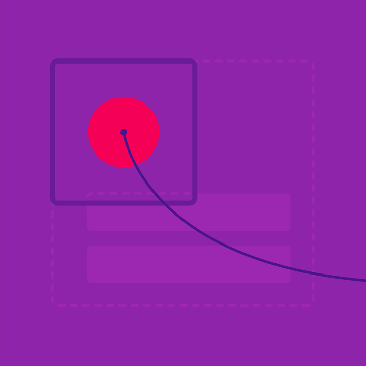

运动中的材料通过共享元素之间的转换来引导用户的视觉焦点。
创造表面
把新创造的表面错开编排。
径向反应
使用触控波纹把用户和表面反应联系起来。

运动中的材料通过共享元素之间的转换来引导用户的视觉焦点。
把新创造的表面错开编排。
使用触控波纹把用户和表面反应联系起来。
转换时需要维持一个清晰的视觉焦点，因此要谨慎的选择需要转换的共享元素的数量和类型。
当表面扩展时，特定的元素会在扩展期间始终保持可见。
复杂的转换应当仅保留一个元素可见（见下文）。
收缩状态下的卡片在扩展后被编排成卡片的头部。
当表面扩展结束后，如果仅保留了一个原有的元素，那么这个元素应当成为转换过程中的焦点，由它来控制其他所有元素。
把不共享的内容与共享元素固定在一起移动。
如果转换前后的两个视图没有共享元素，把所有元素与表面的纵向固定，淡入淡出。表面将会裁剪其中的内容。
当表面扩展时，把不共享的内容与表面纵向移动。
如果共享交叉转换时没有统一的表面，就需要从外部创建一个新的表面进入屏幕，成为新的焦点。
当转换结束后，如果保留了多个共享元素，只有最重要的那个元素在转换期间始终显示。如果其他共享元素太过于抢眼，在转换期间就可能会消失，转换结束之后重新出现。
对
引导用户把焦点集中在下个视图中最重要的元素上。
错
避免出现没有焦点的场面，比如在转换中使用大量共享元素或者使元素的路径相互交叉。
当转换完成时，如果元素还没有加载完成，应当为其保留应有的空间。这样当元素最终出现时，可以避免页面跳动，也就避免了用户点击时，页面的跳动造成用户点错而引起的失望感。
对
转换期间为尚未加载的元素留出空位，加载完成后将其优雅的呈现出来。
错
不要在元素加载完成后挪动布局，挪动会让新进的元素成为焦点，分散了用户的注意力。
新的材料表面，以及其中的内容可以凭空创造。
把新创造的表面和它的创造者关联起来。新表面通常以径向或矩形转换的方式从触控点出现。
对
从触控点出现的菜单，与它的创造元素建立了一种关联性。
错
这个菜单出现在距离触发点很远的地方，这就破坏了菜单与输入源的关系。
当同时创造多个表面时，把它们快速交错显示出来。在一个方向上创造出清晰的、平滑的视觉焦点。
对
列表的入场带有轻微的交错效果。网格列表的交错是从上到下，从左到右的。
错
所有的表面不应该一次性全出现。这样无法创造出清晰的视觉焦点。
错
交错出现的表面应当按顺序出场。
错
不要在前一个表面的动画结束后才开始下一个。使用交错入场时，表面的间隔不应超过 20ms。
这样的表面不是由用户创造的，或者没有输入源，应使用一个优雅的转换组合，包含了淡入淡出、位移和缩放效果。
对
主动创造的表面应当快速且平滑的展示。
错
创造表面时加入过多的动画会分散用户的注意力。
使用径向反应来阐明用户输入与表面反应的联系。
使用触控波纹来把用户输入与屏幕反应联系起来，同时指示出用户的触控点，告知用户操作已被接受。无论是触控还是鼠标点击，都应该在接触点出现波纹。
屏幕反应时从触控点出现的波纹会快速向四周扩散。
用触控波纹把触控点和屏幕反应关联起来。
从触控点开始，波纹经过后的应用栏改变了颜色。
网格中的图片按照从触控点出现的径向反应淡出。